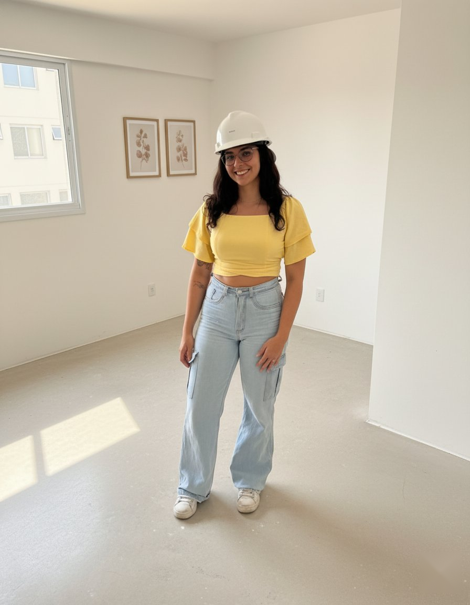
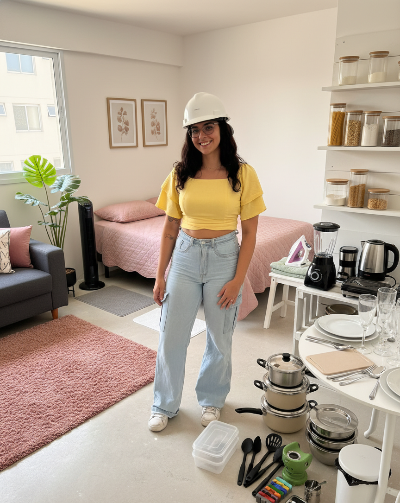

Alignment check — before vs master
Before sozinho

896 × 1152
Master sozinho

864 × 1085
Sobreposição (master @ 50% opacity)
Se Lina alinha = OK. Se "fantasma" = precisa ajustar.
alpha · offsetX (px) · offsetY (px) · scale (%)